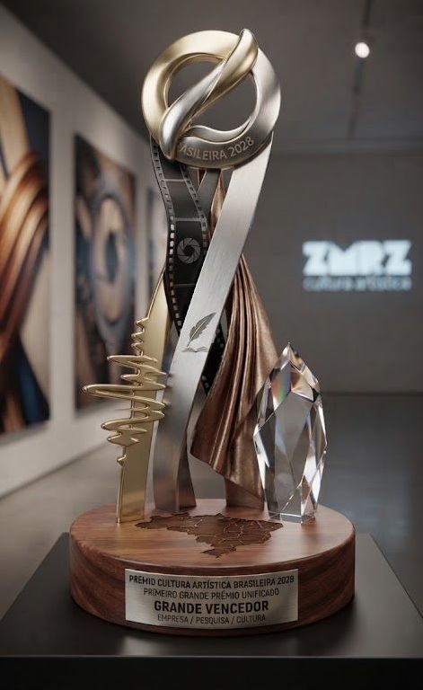

Proposta comercial · 2026–2028
Oportunidades
de marca
A tradição do Cultura Artística e a curadoria contemporânea da Zuca, a Casa da Música Brasileira, juntas no centro de São Paulo.

Zuca · Rua Bahia, 1126

Cultura Artística

Estúdio da Zuca

Teatro Principal · 771 lugares
A Casa da Música Brasileira + Cultura Artística01
A parceria em uma página
Um celeiro criativo e um palco histórico, com uma agenda que a marca pode assinar o ano inteiro.
26
shows por ano: 13 no Auditório e 13 no Teatro Principal
921
lugares em dois palcos de padrão internacional
13
entrevistas ao vivo do Papo de Música, que viram anuário
2
festas de rua gratuitas por ano, da Roosevelt ao Copan
1.000+
artistas inscritos no Edital Zuca 2025
5–6 mil
assinantes e patronos do Cultura Artística
Zuca
Descobre, forma e lança a nova geração da música brasileira: edital, mentorias, podcast, Prosa e Jam.
Cultura Artística
Dá o palco: um dos teatros mais emblemáticos do país, tombado nas três esferas, com base fiel de patronos.
A marca
Assina produtos contínuos, com exclusividade de categoria, conteúdo próprio e relacionamento com o público.
A Casa da Música Brasileira + Cultura Artística02
01
Quem somos
A tradição do Cultura Artística e a curadoria contemporânea da Zuca.
A Casa da Música Brasileira + Cultura Artística03
Zuca · A Casa da Música Brasileira
O que construímos
A Casa da Música Brasileira nasceu como um espaço de encontros, descobertas e celebrações. Desde a inauguração, em outubro de 2024, se firmou como palco de inovação e referência para a música brasileira contemporânea.
Em 2025, a Casa consolidou sua programação como um espaço vivo de cultura, com experiências que aproximaram artistas, público e marcas: dezenas de eventos, milhares de pessoas impactadas e ampla repercussão na imprensa e nas redes.
Mais do que um endereço, a Casa virou ponto de conexão e visibilidade para a cena musical, com um calendário consistente que já ocupa lugar de destaque no cenário cultural do país.
1930
casa modernista de Gregori Warchavchik, tombada pelo Iphan
2024
inauguração da Zuca, com Jota.pê como embaixador
Fachada

Espaço de trabalho e convivência
Estúdio
A Casa da Música Brasileira + Cultura Artística04
Cultura Artística · desde 1912
Um patrimônio nacional
“Os dois maiores maestros e compositores brasileiros, Heitor Villa-Lobos e Camargo Guarnieri, prepararam com carinho especial o concerto de inauguração do Teatro Cultura Artística e de abertura da temporada de 1950.”
Ivan Ângelo
Na época, era um dos maiores e mais modernos complexos culturais da América Latina. O projeto de Rino Levi ganhou destaque pela acústica das salas, pelos camarins e pelo monumental painel de Di Cavalcanti na fachada. Seus palcos abrigaram espetáculos memoráveis de teatro, música, canto e dança.
Marco cultural e arquitetônico, o teatro é tombado nas esferas federal, estadual e municipal. Reaberto em 2024, tem Teatro Principal de 771 lugares e Auditório de 150.
Fachada e painel de Di Cavalcanti

Teatro Principal

Auditório

Foyer

Hall

Salas de estudo
Ilustrações em aquarela dos espaços do Cultura Artística.
A Casa da Música Brasileira + Cultura Artística05
02
Construção
da parceria
Curadorias e conexões entre polos criativos.
A Casa da Música Brasileira + Cultura Artística06
Aliança estratégica
Um novo polo cultural no centro de São Paulo
A Zuca lança e gerencia a nova geração da música brasileira. O Cultura Artística é um dos teatros mais emblemáticos do país desde a década de 1950. Juntos, ocupam cultural e socialmente o centro histórico, da Praça Roosevelt ao Copan.

O celeiro e polo criativo
Curadoria artística, projetos urbanos, formação de novos nomes, conteúdos digitais e atração da comunidade jovem.

O palco
Palcos de padrão internacional, chancela de excelência cultural e conexão com uma base engajada de assinantes e patronos.
Zuca
Estúdio da Zuca
Teatro Principal

Auditório

Foyer
A Casa da Música Brasileira + Cultura Artística07
03
Espaços
e ativações
Produtos, conceitos e oportunidades.
A Casa da Música Brasileira + Cultura Artística08
Produtos Zuca
A força do ecossistema criativo
| Edital de Música 1.000+ inscritos em 2025 | Descoberta, mentoria e aceleração de novos talentos da música em diferentes regiões do Brasil, com documentário anual. |
| Zuca Podcast | Histórias da música brasileira pela memória de artistas, músicos e personalidades da indústria. Um convidado por episódio. |
| Prosa | Espaço de pensamento, troca e provocação sobre os caminhos da música e do entretenimento contemporâneo. |
| Zuca Jam | Espaço livre de criação e troca entre artistas, que convida intérpretes e compositores a experimentar novas formas de expressão coletiva. |
Estúdio
A Casa da Música Brasileira + Cultura Artística09
Infraestrutura Cultura Artística
O palco: estrutura de classe mundial no centro de São Paulo
| Teatro Principal 771 lugares | Som e luz de última geração. Casa da Série Petrobras e de grandes apresentações. |
| Auditório 150 lugares | Espaço intimista da Série Zuca, ideal para gravações ao vivo e lançamentos. |
| Espaço aberto para a rua | Conexão direta com o trânsito de pedestres do centro, para ativações urbanas. |
| Livraria Fauna e galerias | Exposições, lançamentos de livros, palestras e encontros exclusivos. |
Teatro Principal
Auditório
Foyer aberto para a rua
A Casa da Música Brasileira + Cultura Artística10
Gastronomia
Café Petra no Cultura Artística
O café ganha o nome da marca e vira o ponto de convivência do teatro, com fluxo diário em horário comercial e atendimento exclusivo em dias de evento.
| Naming rights | Café Petra no Cultura Artística, com a marca assinando o espaço. Ativação comercial contínua no horário comercial e na agenda noturna de shows. |
| Exclusividade de portfólio | Venda exclusiva de todo o portfólio de bebidas do Grupo Petrópolis em todos os eventos realizados no local. |
| Conexão com a rua | O espaço aberto para a rua leva a marca ao trânsito de pedestres do centro e às ativações do Cultura para a Rua. |
| Ativação gastronômica | Operação da Esse eu Posso, com cardápio assinado por chef renomado, focado em comida saudável e bem-estar. |
A Casa da Música Brasileira + Cultura Artística11
Oportunidades
Seis frentes para a marca ativar
01
Naming rights do café
Exclusividade de categoria e de todo o portfólio de bebidas nos eventos. Operação com cardápio de chef renomado e verba de trade contínua.
02
Cultura para a Rua
2 festas por ano, aos domingos, com a rua fechada e acesso gratuito: show de encontro entre artistas, 2 DJs e atividades para crianças e pets. A marca assina o evento, com exclusividade de segmento.
03
Série Brasilidades
26 shows por ano com venda de ingressos: 13 no Auditório, com curadoria da Zuca, e 13 no Teatro Principal, com curadoria conjunta com o Cultura Artística.
04
Mentoria e capacitação
Mentorias na Zuca para jovens da periferia, com estágio no Cultura Artística em produção cultural, som, luz, bilheteria, regência, roadie e mídias sociais.
05
Papo de Música e Anuário
13 entrevistas ao vivo com a jornalista Fabiane Pereira, transmitidas no YouTube, que viram o Anuário da Cultura Brasileira, impresso e de colecionador.
06
Clube de assinantes
Acesso a 5 a 6 mil assinantes e patronos, com o novo programa Jovens Patronos e prioridade e desconto nas assinaturas para clientes e colaboradores da marca.
A Casa da Música Brasileira + Cultura Artística12
Visão 2028
Prêmio Cultura Artística Brasileira: o primeiro grande prêmio unificado das artes no Brasil
Contrato plurianual de 3 anos, com a criação de uma premiação inédita na cena cultural do país.
MúsicaCinemaLiteraturaModaArtes Plásticas
Grande diferencial
Além de consagrar artistas nos palcos e nas telas, o prêmio reconhece quem move a cultura nos bastidores: empresários, curadores, diretores de fotografia, produtores executivos e diretores artísticos.

Imagem meramente ilustrativa
A Casa da Música Brasileira + Cultura Artística13
Prêmio 2028
A noite de premiação e a entrada da marca
A noite em 4 tempos
1
Rua
Tapete ligando a Roosevelt ao Copan, com público na calçada.
2
Abertura
Show de encontro entre um artista consagrado e um talento do Edital.
3
Cerimônia
771 lugares, entregas por pilar, com prêmios de frente e de bastidor.
4
Depois
Pós-cerimônia no Café Petra e na rua, com Zuca Jam.
Entradas de marca
Naming do prêmio: “apresentado por [marca]”.
Patrocínio por pilar, com exclusividade de segmento.
Prêmio de bastidores assinado pela marca.
After no Café Petra: o encerramento da noite no espaço da marca.
Tapete e rua: experiência e amostragem para o público.
Conteúdo e anuário: bastidores, entrevistas e capítulo patrocinado.
ESG: formação dos jovens que operam a cerimônia.
A Casa da Música Brasileira + Cultura Artística14
Vamos construir juntos.
comercial@talitamoraiis.com
@acasadamusicabrasileira · @culturaartistica
A Casa da Música Brasileira + Cultura Artística15